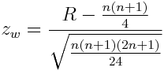

Statistics > Nonparametrics > Wilcoxon Signed Rank Test
This utility performs calculations for the Wilcoxon Signed Rank Test,
which is a non-parametric hypothesis test for the median of a single
sample or of two samples of matched pairs.
The null hypothesis H0 of a claim is median = median0,
where median0 is the hypothesized median.
The alternative
hypothesis H1
can be one of the following: median < median0,
median > median0, or median ≠ median0.
Let x be a value in a single sample or the difference of matched
pairs in two samples.
For each value of x, the absolute value
of the difference between
x and the hypothesized median median0 is computed.
Differences of 0 are discarded.
Let n be the number of nonzero differences.
Ranks from 1 to n are then assigned to each x based on
the ascending order of the differences. Mean of ranks are assigned to
tied values.
A negative (-) sign is assigned
to a rank if its corresponding x is below median0 ,
and a positive (+) sign is assigned if x is above median0.
The rank sums are calculated as follows:
- Left-tailed (H1: median < median0):
R(+) = the sum of ranks with positive (+) signs
- Right-tailed (H1: median > median0):
R(-) = the sum of ranks with negative (-) signs
- Two-tailed (H1: median ≠ median0):
R(+-) = the minimum of R(+) and R(-)
If n is less than or equal to 30, the exact p-value and critical
value for the rank sum is calculated. The test statistic R is the rank
sum corresponding to the type of test described above. The p-value for
a one-tailed test (left-tailed or right-tailed) is
P(X ≤ R) where X is a random variable representing the
rank sum. The p-value for a two-tailed test is
2P(X ≤ s).
If n is greater than 30, normal approximation
is used. The test statistic is

The p-value for a one-tailed test (left-tailed or right-tailed) is
P(z ≤ zw) where z is a
random variable representing the z-score. The p-value for a two-tailed test is
2P(z ≤ zw).
To use the utility, follow these steps:
- If one sample of values
are provided in a single column, select the One Sample radio button
and the column name in the corresponding drop-down menu.
- If matched pairs of two samples are provided in two columns, select the
Two Samples (Matched Pairs) radio button, and
select the column names in the corresponding drop-down menus.
- Select the form of the alternative hypothesis in the
Alternative Hypothesis: drop-down menu. Enter the
hypothesized population median in the provided text box.
- Provide the significance level of the test (between 0 and 1).
- Click the OK button to perform the computation. The
results will be displayed in the log window.